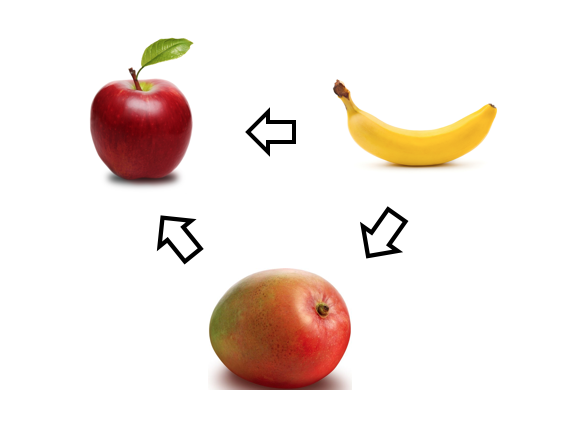
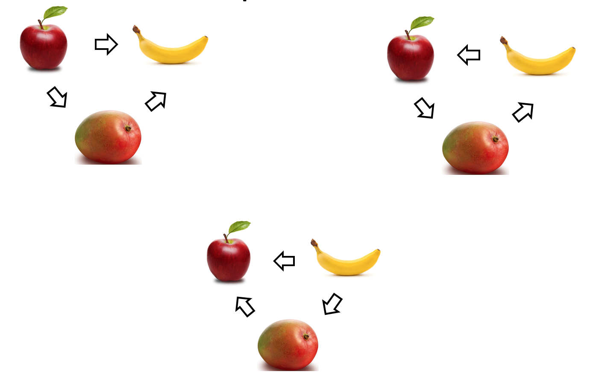
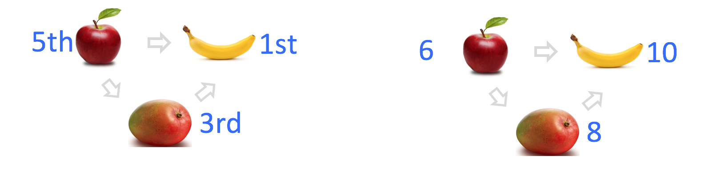
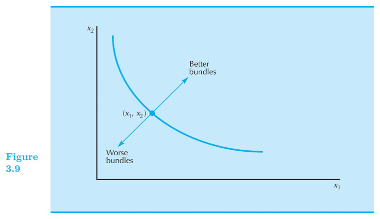
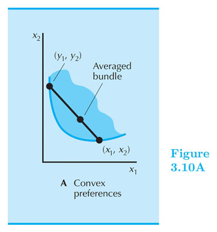
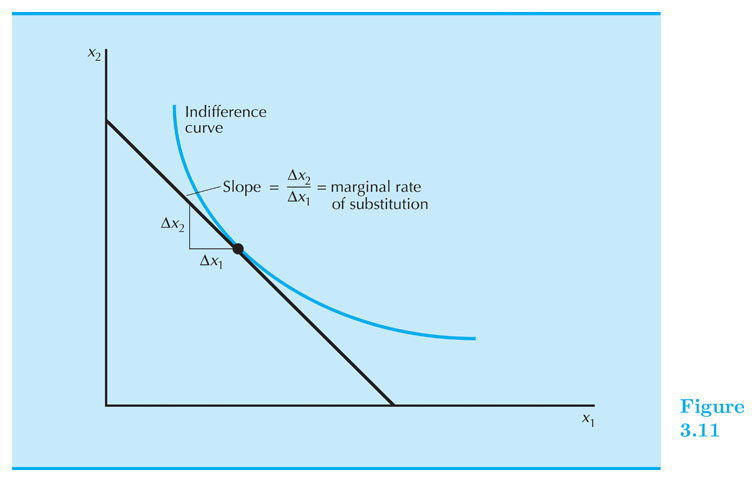

Preferences
Intermediate Microeconomics (Econ 100A)
Kristian López Vargas
UCSC - Spring 2017
Rationality in Economics - Behavioral Postulates
-
A decision maker knows what he/she likes/enjoys and chooses his/her most preferred alternative among the available ones.
-
To say something about his/her behavior, we must model decision makers’ preferences.
Basics of Preferences Relations
John: apple better than Mango, apple better than banana, mango better than banana.

Basics of Preferences Relations
Alí, Bob, Carlos, ... , John, ... ,Wei

...
Basics of Preferences Relations
-
Preferences are a personal ranking of alternatives.
-
Preferences are a personal assignment of satisfaction level (utility).

Preferences Relations
Preference Relations
Comparing two different consumption bundles, $ x $ and $ y $ in the consumption space:
-
Strict preference "$ x \succ y $" : x is strictly more preferred than is y
-
Weak preference "$ x \succsim y $" : x is as at least as preferred as is y
-
Indifference "$ x \sim y $" : x is equally preferred as is y
Preference Relations
-
Strict preference ( $ \succ $ ) , weak preference ( $ \succsim $ ) and indifference ( $ \sim $ ) are all preference relations.
- Binary and ordinal
-
These relations suggest "feelings" and predict the behavior we would observe:
- $ iPhone7 \succ SGalaxy8 \rightarrow $ _______?
- $ iPhone7 \succsim SGalaxy8 \rightarrow $ _______?
- $ iPhone7 \sim SGalaxy8 \rightarrow $ _______?
Preference Relations
- They are interlinked
- $ x \succsim y $ and $ y \succsim x $ implies $ x \sim y $
- $ x \succsim y $ and NOT $ y \succsim x $ implies $ x \succ y $
Assumptions on Preference Relations (1): Completeness
-
Completeness: For any two bundles x and y it is always possible to make the statement that either
-
$ x \succsim y $ or $ y \succsim x $
Assumptions on Preference Relations (2): Transitivity
-
Transitivity:
- If x is at least as preferred as y, and
- y is at least as preferred as z, then:
- x is at least as preferred as z.
-
That is, if $ x \succsim y $ and $ y \succsim z $ implies $ x \succsim z $
Preferences in the Commodity Space
- Recap: the Commodity Space is the positive quadrant of the n-dimensional plane ($ \Re_{+}^n $) where these baskets or bundles live.

Indifference Curves or Indifference Sets
-
Indifference Curves or Indifference Sets (of consumer i):
-
A set of bundles that a consumer regard equally.
-
Take bundle $ x $. The set of all bundles equally preferred to $ x $ makes the "indifference curve" containing $ x $. We denote this set by $ I(x) $.
-
All the bundles $ y $ in this set have this property: $ y \sim x $.
-
Since an indifference “curve” is not necessarily a "curve", we might want to call it indifference “set”.
Indifference Curve (example)
- E.g.: $ (3, 4) \sim (1, 12) $
Weakly preferred set WP(x)
- WP(3,4) is the shaded area
Assumption on Preferences (3): More is better (monotoniticy)
More is Better / Monotonicity: * All else the same, more of a “good” commodity is better than less. * $ (5.01, 20) \succ (5, 20) $
Assumption on Preferences (3): More is better (monotoniticy)
- This assumption implies that indifference sets are:
- Curves! (not thick bands)
- Downward sloped! (think about it)

Is there only one indifference curve?
-
No! Typically, there are infinite.
-
In most cases it makes sense we talk and draw several ("the indifference map").
Goods Vs. Bads Vs. Neutrals
Assume $ x_2 $ is a good: more is better.
Draw and IC for each case:
-
$ x_1 $ is a good.
-
$ x_1 $ is a bad.
-
$ x_1 $ is a neutral.
Home exercise:
- Can two distinct indifference curves cross each other?
Assumption on Preferences (4): Convexity
(Weak) Convexity:
-
Mixtures of bundles are (weakly) preferred to the bundles themselves.
-
Example: If the 50-50 mixture of the bundles $ x $ and $ y $ is formed like this $ z = (0.5) x + (0.5)y $. Then $ z $ is at least as preferred as $ x $ OR $ y $.
Assumption on Preferences (5): Convexity

Assumption on Preferences (5): Convexity
- Example of preferences that do not satisfy convexity

Types of Tastes: Perfect Substitutes
-
If a consumer always regards units of commodities 1 and 2 as equivalent (or equivalent up to a fixed ratio), then these commodities are regarded as perfect substitutes for the consumer.
- Example: if you like Coke and Pepsi exactly equally, the total amount of bottles is what matter for the consumer. Another example: Agave - Sugar
Types of Tastes: Perfect Complements
-
If a consumer always consumes commodities 1 and 2 in fixed proportion (e.g. one-to-one), then the commodities are perfect complements to the consumer.
-
Only the number of pairs in the fixed proportion matter to the consumer. Examples?
Slope of an Indifference Curve
-
The slope of an indifference curve is its marginal rate-of-substitution or MRS.
-
MRS is the rate at which the consumer is only just willing to exchange/substitute commodity 2 for a small amount of commodity 1.
-
$ MRS = \frac{d x_2} {d x_1} $ along one indifference curve.

MRS
-
Think about the MRS in Perfect Substitutes
-
Think about the MRS in Perfect Complements